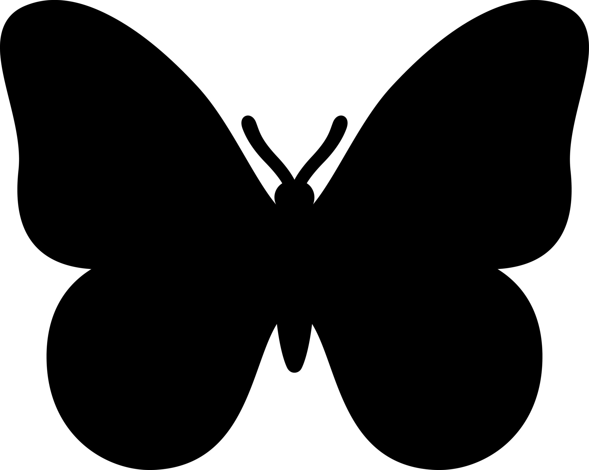

Hi! My name is Zoe and I'm an undergraduate student at York University,
majoring in Information Technology - BA Honors. I consider myself a little bit
of a tech guru, but the nontech side, I occasionally dabble in some community
work, such as volunteering at summer camps, churches, and elder communities.
Feel free to explore my website to know more about me and my work.
Thanks for stopping by!